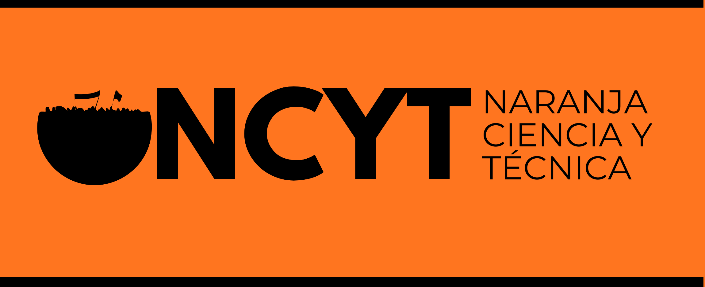

Nuestro Programa
Construir una ciencia democrática, al servicio de lxs trabajadorxs. Promovemos la investigación con impacto social, la democratización del conocimiento y la defensa de los derechos laborales en el ámbito científico-técnico.
Agrupación de Trabajadorxs de Ciencia y Técnica organizadxs con independencia política de las gestiones y los gobiernos
¿Ciencia para qué?¿Cómo y con quién? Textos sobre cuestiones políticas, culturales, ambientales, económicas, históricas o de actualidad.
Leer másReseñas, recomendaciones y críticas de películas, series, libros, discos, muestras artísticas u otras producciones culturales.
Leer másArtículos sobre temas de investigación, orientados a la comunicación y divulgación amplia del quehacer científico.
Leer másConstruir una ciencia democrática, al servicio de lxs trabajadorxs. Promovemos la investigación con impacto social, la democratización del conocimiento y la defensa de los derechos laborales en el ámbito científico-técnico.
soberanía tecnológica y disputa por el futuro energético
Aula 115 - UTN FRD
6 NOVCensurar la ciencia para tapar el envenenamiento
Exáctas UNLP
11 DICAnálisis
UMDP
En nuestro canal encontrarás grabaciones de charlas, entrevistas a investigadores y contenido educativo sobre diversos temas de actualidad científica.

desde la intervención del gobierno en el INTI lxs trabajadorxs denuncian múltiples mecanismos persecutorios y represivos tales como: la instalación de cámaras, con micrófono y con reconocimiento facial, en todo el PTM; desembarco de gendarmería y policía federal para la vigilancia de entrada y salida de trabajadorxs del predio.
un proyecto político de subordinación de la ciencia pública argentina a los intereses del capital concentrado, bajo el lenguaje de la eficiencia, la competitividad y la innovación.
El gobierno nacional avanza con un plan de privatización de Nucleoeléctrica Argentina S.A. (NASA), la empresa estatal que opera las tres centrales nucleares de potencia del país: Atucha I, Atucha II y Embalse. No se trata de una medida técnica ni aislada, sino de un nuevo capítulo en el desguace del sector energético nacional, continuidad directa del modelo neoliberal inaugurado en los años noventa.